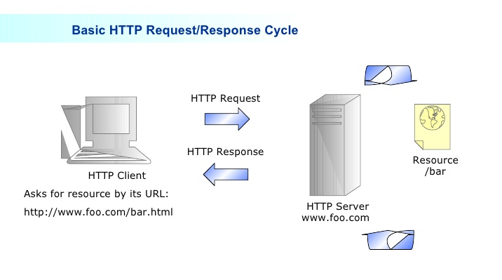

Lecture #1
Introductions
What is the web made up of?
- Web Page
- An HTML file stored on a Web Server and exposed via HTTP.
- HyperLink
- A URL embedded in one Web Page that references another Web Page
- URL
- Names a resource on the web/network. Acronym for "Uniform Resource Locator".
- Example: 'https://server-name.com/resource-name'
- Absolute URL
- A URL that begins with 'http://' or a leading '/' and can reference any resource on the web. The browser's
address bar usually displays Absolute URLs.
- Examples: '/index.html', 'https://google.com/search', '/css/my-styles.css'
- Relative URL
- A URL that does not begin with 'http://' or a leading '/'. They can only reference resources
on the same Web Server that the HTML page came from. Most HyperLinks on a Web Page will
reference other files on the same server by using Relative URLs.
- Examples: 'register.html', 'js/my-code.js', 'css/my-styles.css'
- HTML
- Standard for structured text that defines a tree of HTML Elements to be
displayed by the browser. Acronym for "HyperText Markup Language".
- HTML Document
- An HTML Document (aka 'document') that represents a Web Page loaded into the Browser
The document holds information about the page such as it's URL (document.location),
cookies (document.cookies) and other properties of the Web Page's content (document.body).
Each document has exactly one 'Root' element (i.e. "") that contains a tree of elements.

- HTML Element
- Structured text that surrounds and defines the semantics of a document's content.
Each HTML Element (aka 'element') has at most one 'Parent' element and might
contain zero or more 'Children' elements. All elements start with an opening 'tag' but
only some elements have closing 'tags'. The elements that cannot have closing tags
are called 'empty elements' and by virtue of not having a closing tag cannot have any
children elements. Elements often have a restricted set of types of children they may contain.
- Example element w/ closing tag:
<a href="xyz">HyperLink to xyz</a>
- Example 'empty' element w/o closing tag:
<br />
- HTML Attribute
- All elements have one or more HTML Attributes (aka 'attributes') applied to them. These attributes
define/adjust the look or behavior of the elements they are applied to. If you do not specify
an attribute value for an element then the browser will give that attribute a default value.
The HTML standard defines which attributes can be applied to which elements. Some attributes
are required for a given element while others are optional.
How does the web work?

- HTTP
- A TCP/IP Socket (which is like a pipe) through which HTTP Requests and HTTP Responses
are sent/received between the Browser and one or more servers. Stands for
"HyperText Transport Protocol"
- HTTP Request
- Data sent by the Browser to the Server via a Socket
- HTTP Response
- Data sent by the Server back to the Browser in response
to the Browser's previous HTTP Request
- HTTP Client
- A program (e.g. Browser) running on your computer or phone
that understands HTTP, HTML, CSS and JavaScript
- HTTP Server
- A computer (e.g. Web Server or Internet Site) on the network that communicates with Browsers via HTTP
- Socket
- A TCP/IP connection between a Browser and a Web Server
- TCP/IP Socket: Transport Control Protocol/Internet Protocol
- A messaging system that creates a reliable connection (via redundancy and retries)
over an unreliable, "best effort" messaging system.